사신짱 스핀오프 고기 미노스 쇠고기 100% 1권 진보초에서 고기 먹는다!
사신짱 스핀오프 고기 미노스 쇠고기 100% 1권 진보초에서 고기 먹는다!
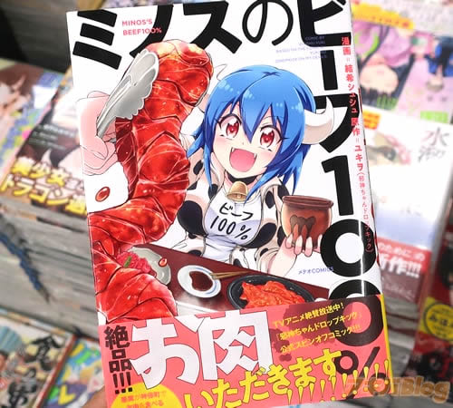
사신짱 드롭킥 스핀오프 만화 [미노스의 비프 100%] 1권 발매
악마가 진보쵸에서 고기를 먹는 포만 코미디! 만화
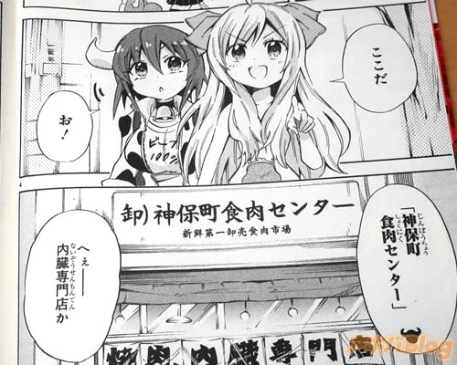
작중에는 실제 점포가 등장.
진보쵸 식육 센터
“여기다” “에이, 내장 전문점이야?”
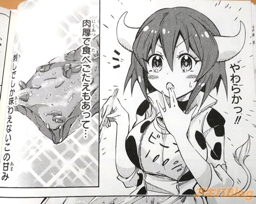
첫 육회 (고기 두께에 식감도 있고… 육회밖에 맛볼수 없는 이 단맛)
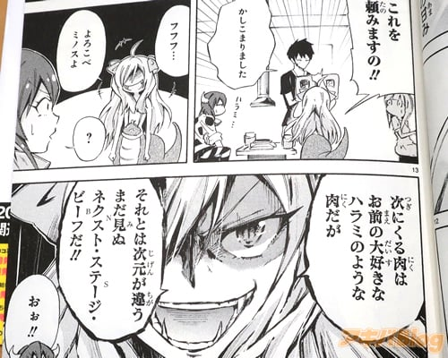
기뻐해라 미노스야. 다음에 오는 고기는 네가 가장 좋아하는 갈매기 같은 고기인데,
그것과는 차원이 다른, 아직 보지 못한 넥스트 스테이지 고기다!
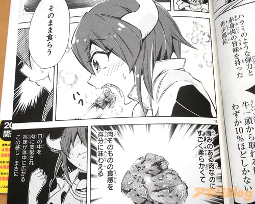
안경 (하라미 같은 탄력과 붉은색 고기의 맛을 가진 희귀 부위)
(두툼한 고기인데 엄청 부드럽고 고기 자체의 질감을 충분히 맛볼수 있다)
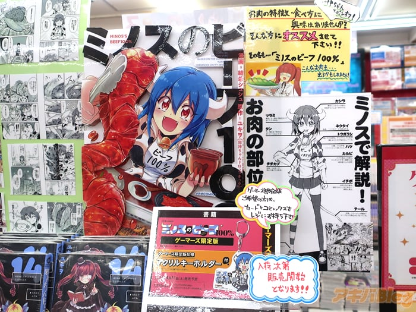
게이머즈 본점 (특전: 북커버)
게이머즈 한정판 있음 토라노아나 아키하바라점A
(특전: 일러스트 카드)

COMICZIN 아키하바라점 (특전: 일러스트 카드)
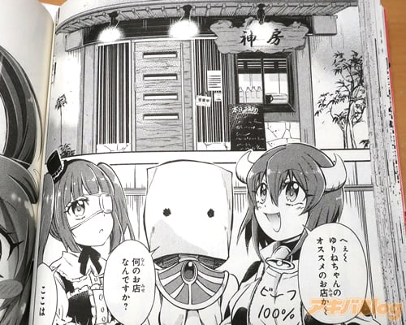
카미보우 (와~ 유리네가 추천하는 가게구나~)
‘여긴 뒷면 본디야’
이건 방심하면… 볼이 떨어지는 맛이야~
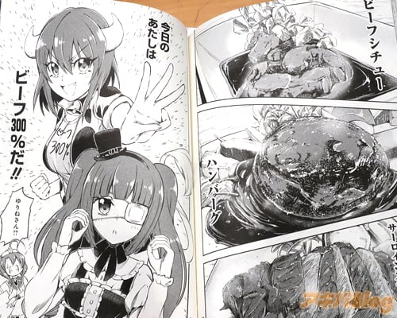
비프 스튜, 햄버거, 그리고 살로인 스테이크.
오늘의 나는 비프 300%다!
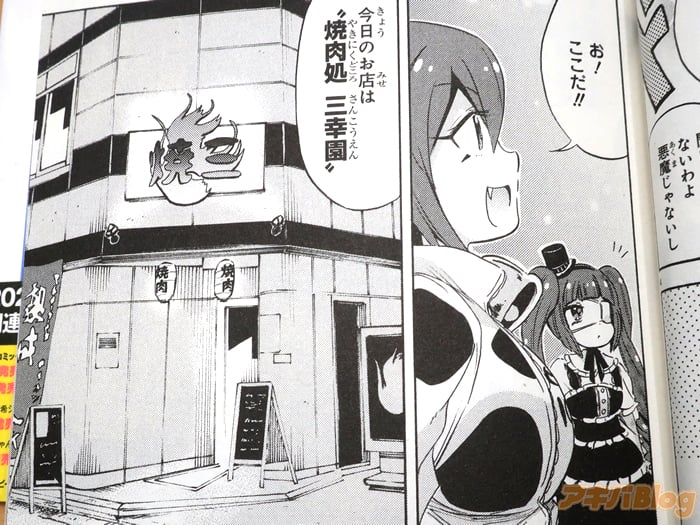
오! 여기야! 오늘 가게는 야키니쿠처 삼행원
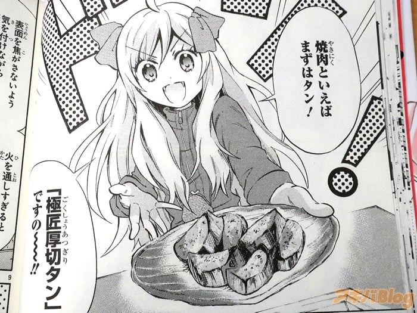
“우선은 소 혀! 잘 썰린 소 혀 입니다~!”
들어올린 이 갈매기를… 철판 위로… 고!
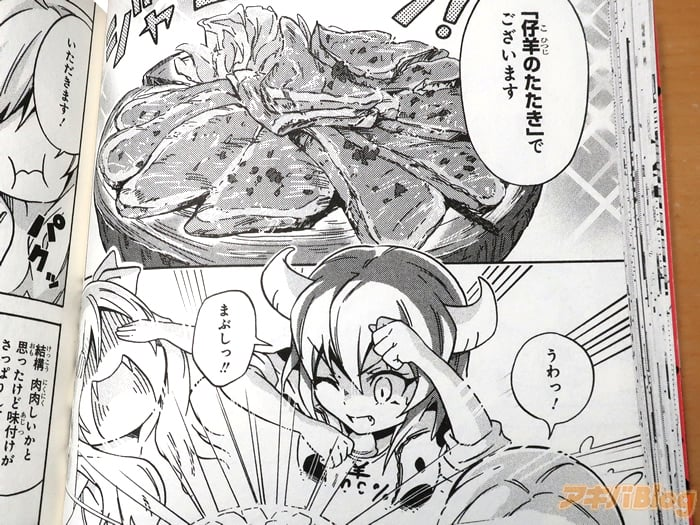
어린 양고기 주물럭 입니다
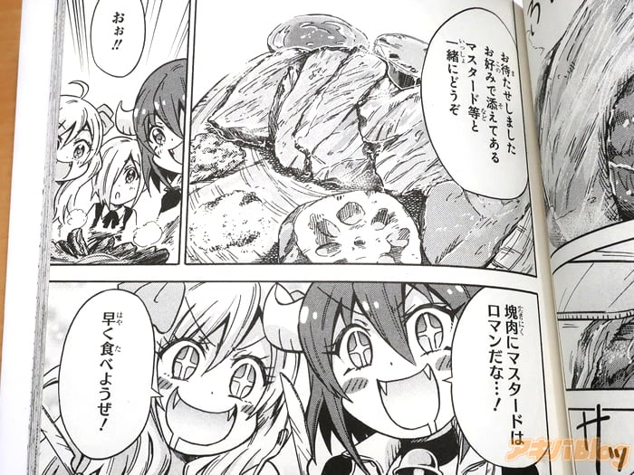
오! 불고기에 머스타드 소스는 낭만적이야!
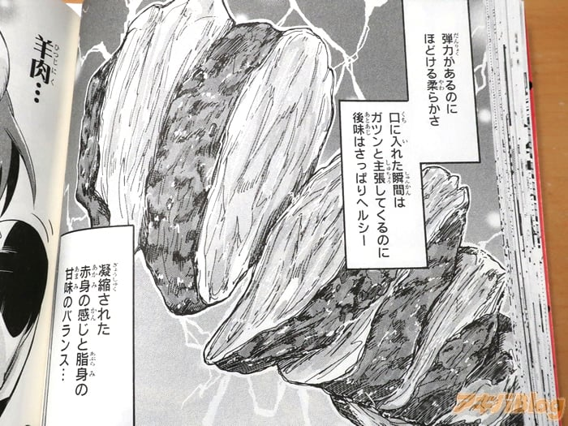
응축된 살코기의 느낌과 비계의 단맛의 밸런스